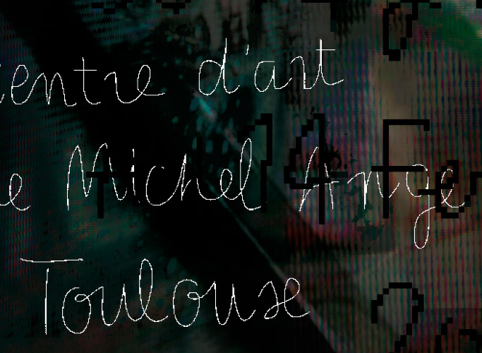
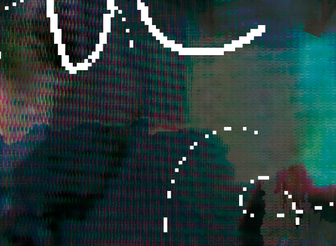
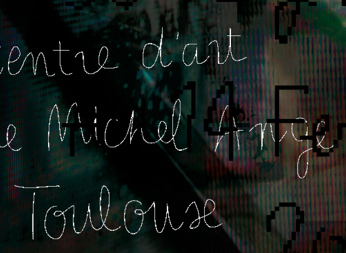
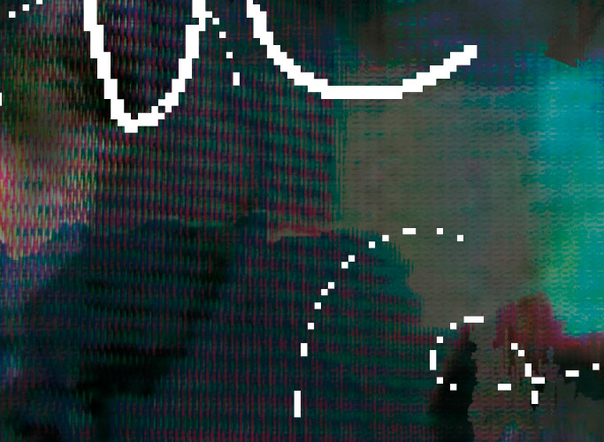

Affiche
Exposition du 14/01 au 14/02 2015
au BBB Centre d'art Toulouse
Collective Collection regroupe différentes œuvres hétéroclites collectées et mises en espace par l’artiste Laurent Fiévet. L’enjeu de ce projet était de produire un objet graphique propre à cette exposition, à la suite d’une immersion totale dans l’espace d’exposition. L’objet résultant de cette expérience sensorielle donne lieu à une affiche proposant un compte rendu global de Collective Collection, selon un point de vue personnel.
 


